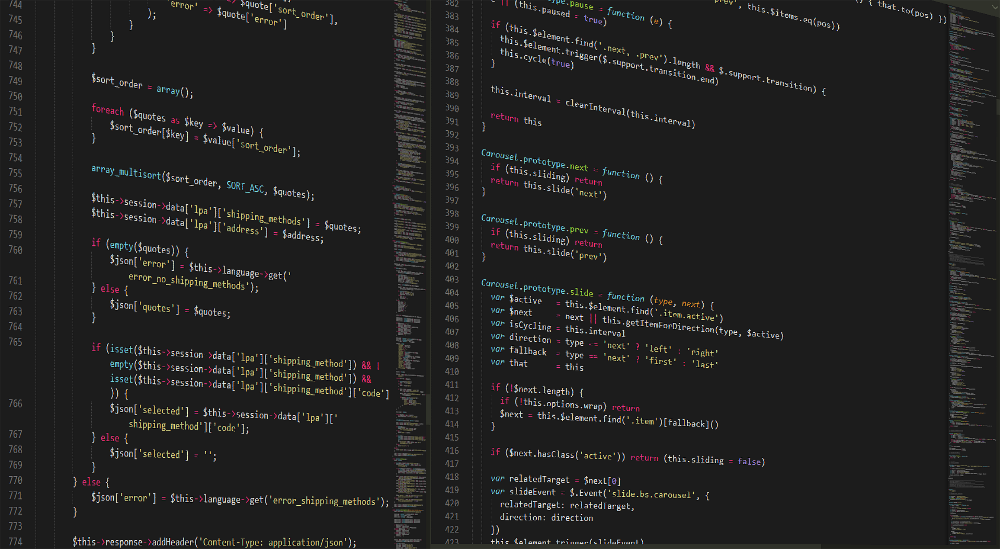
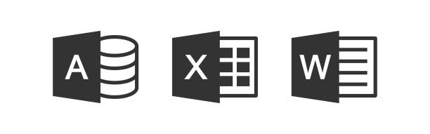
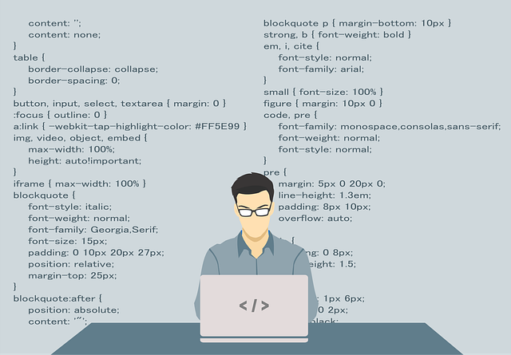
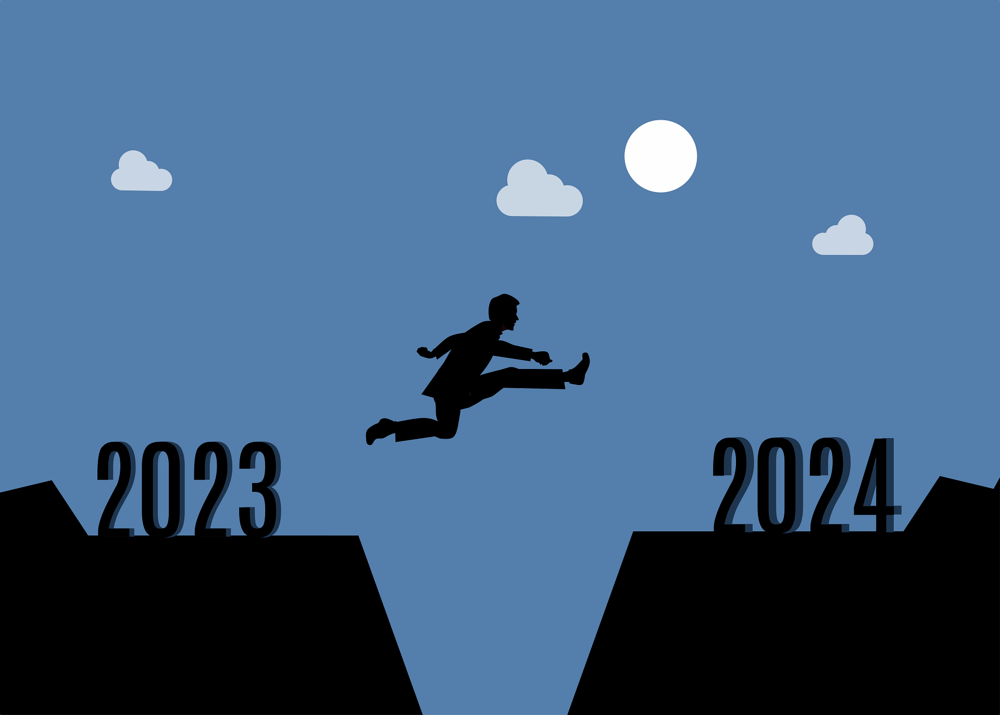
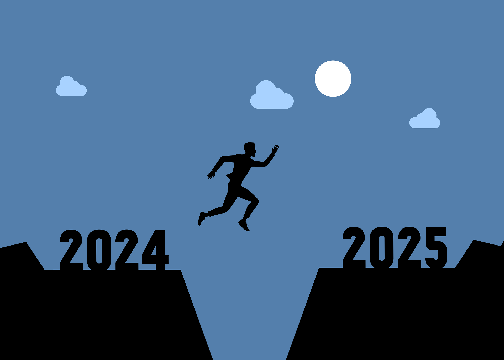
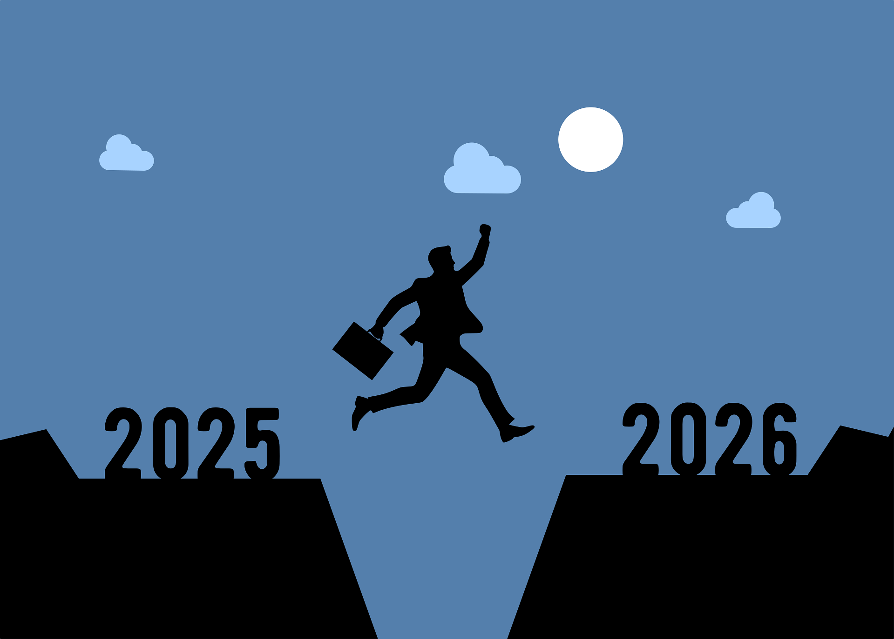

Compétences
Administration réseau
1 - Maîtrise de la configuration des routeurs et switches Cisco avec création des Vlan pour les switches en appliquant la sécurité de bases.
2 - Maîtrise du sertissage des câbles réseau RJ45
3 - Installation des systèmes d'exploitation Windows et Linux
4 - Maitrise du langage de Scrpits avec le CMD
5 - Installation, maintenance et dépannage d'équipements IT

développement web
1 - Connaissances avancées en PostgreSQL pour l'administration des bases de données
2 - Connaissances en php, python et flask pour le backend
3 - Connaissances de base en HTML et CSS pour le frontend
Soutien scolaire (Mathématiques, Physique-chimie)
1 - Soutien scolaire et aide aux devoirs
2 - Encadrement pédagogique d'élèves
3 - Méthodes d'enseignement au niveau de l'apprenant
Projets

Création d'une base de donnée locale
En première année j'ai créé une base de données entièrement fonctionnelle avec Microsoft Office Word
Cette base donnée destinée aux Infrastructures scolaires pouvait enrégister les élèves selon leur classe,
oraniser les notes mais surtout calculer automatiquement les moyennes des élèves par selon la classe en donnant
l'ordre de mérite.
Cette base de données a été nommée "NotePilot"

Logiciel scolaire et capteurs thermique
Je travaille également sur mon logiciel scolaire qui est une version améliorée de la base de données créée avec Access. Il sera sous forme d'application web et aura des fonctionnalités bien sur avancées, utiles et modernes.
Par ailleurs j'ai été dans la conception d'un capteurs thermique avec géolocalisation afin d'implanter cette technologie dans un bracelet pour les attacher à des animaux de fermes. Le projet étant suspendu forte de moyen financiers, j'ai à coeur à le redonner vie dans les plus brefs délais.
Site web NovaLearn
Actuellement, je suis dans un projet de construction d'un site web qui est une plateforme étudiante. Je suis dans l'équipe qui s'occupe du backend. J'ai dans un premier temps créer le backend de ce site en utilisant Flask et PostgreSQL pour la database. Etant donné que le formateur tient aussi à ce que je le fass en php alors je m'y suis mis tout en gardant PostgreSQL pour ma base de données.
Formations et Expériences

2023 - 2024: Obtention du Baccalauréat
J'ai obtenu le baccalauréat 2024 en série C Mathématiques avec une moyenne de 12,65 pour une mention assez bien. Durant cette même j'ai obtenu mon diplôme de Major Terminal de la classe de terminale car j'étais le 1er des trois terminale à savoir: La terminale D et la terminale A4. J'avais donc obtenu une moyenne annuelle de 13,48
Par ailleurs, j'avais aussi été admis au baccalauréat blanc avec une moyenne de 12,70. J'avais également atteint la moyenne de 13,?? au deuxième trimestre et 14,03 au 1er trimestre.

2024 - 2025: 1re année de Génie Informatique et TELécommunications
2025 - 2026: 2e année de Génie Informatique et Intelligence Artificielle
Durant l'année 2024 - 2025, j'ai effectué ma première année universitaire au sein de l'université privée de Loango. Dans cet établissement, j'ai acquis des connaissances solides notamment en réseau informatique, langage de script, en base de données et des connaisances en électronique analogique, maintenance et dépannage des ordinateurs, en architecture des ordnateurs. Ma première au sein de cette université m'a été enrichissante. Cependant, durant cette première année j'ai obtenu une moyenne de 14,06 au premier semestre et 12,07 au deuxième avant rattrapage
Pour l'année en cours, il n'y a encore aucune donnée concrète dont je puisse faire part pour le moment. Mais ma détermination ne change pas et je suis prêt à rélever de nouveaux défits


Expériences
Durant ma première année d'étude je suis parvenu à trouver un stage de 07 mois au sein d'une entreprise de prestation informatique appelée ITPRO Congo dans laquelle j'ai beaucoup appris. Mon stage se basait sur le support IT. Ma mission consistait généralement à aller sur le terrain pour faire du helpdesk. Je suis intervenu chez SAT Congo et K-Chimie notamment pour des problèmes de dépannage sur des outils IT ou pour la réorganisation d'un parc informatique
J'ai également créé un site web en freelance pour un particlier. Il s'agissait d'un site d'orientation scolaire
Actuellement je fais du soutien scolaire pour des enfants qui préparent leur BEPC et leur BAC également. J'élabore donc des programmes adaptés au besoin de chaque apprenants tout en les mainteant en état d'examen constant
Enfin, j'ai effectué des prestations dans une école appelée Institut Henri Lopes au sein de laquelle ma mission consistait à saisir les différents sujets pour les évaluations et les imprimer.